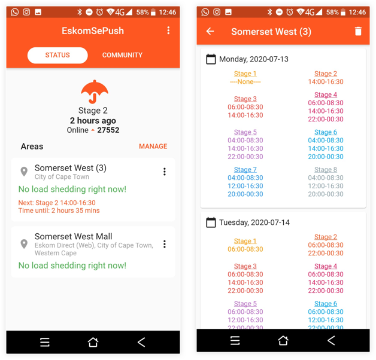
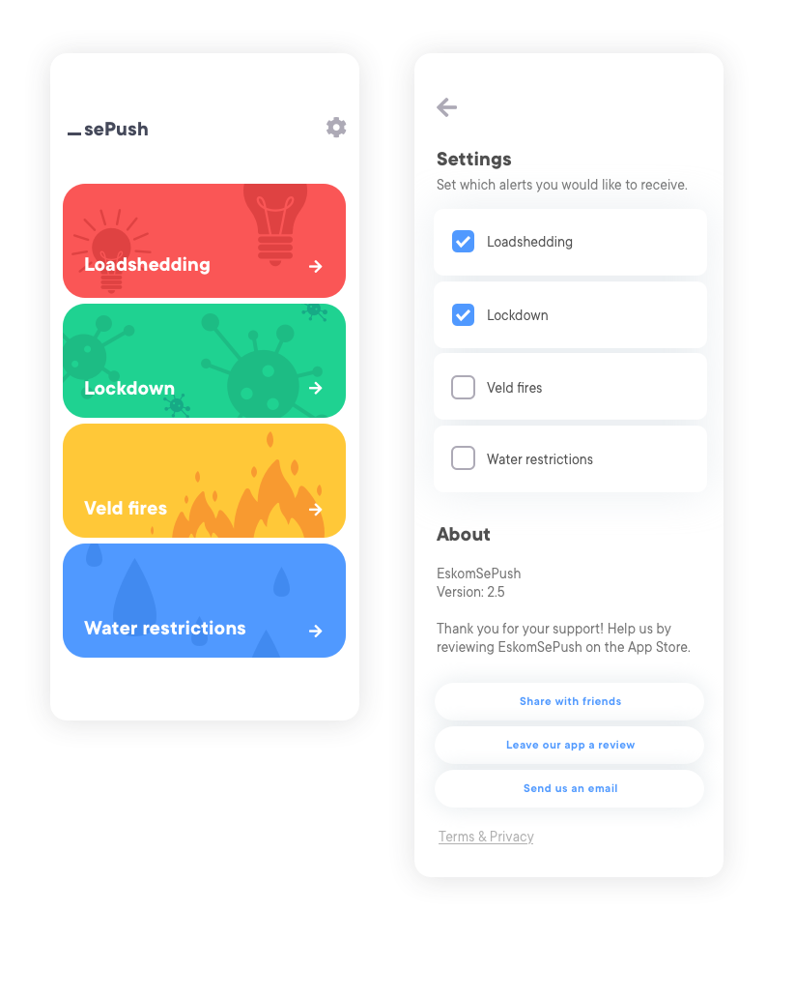
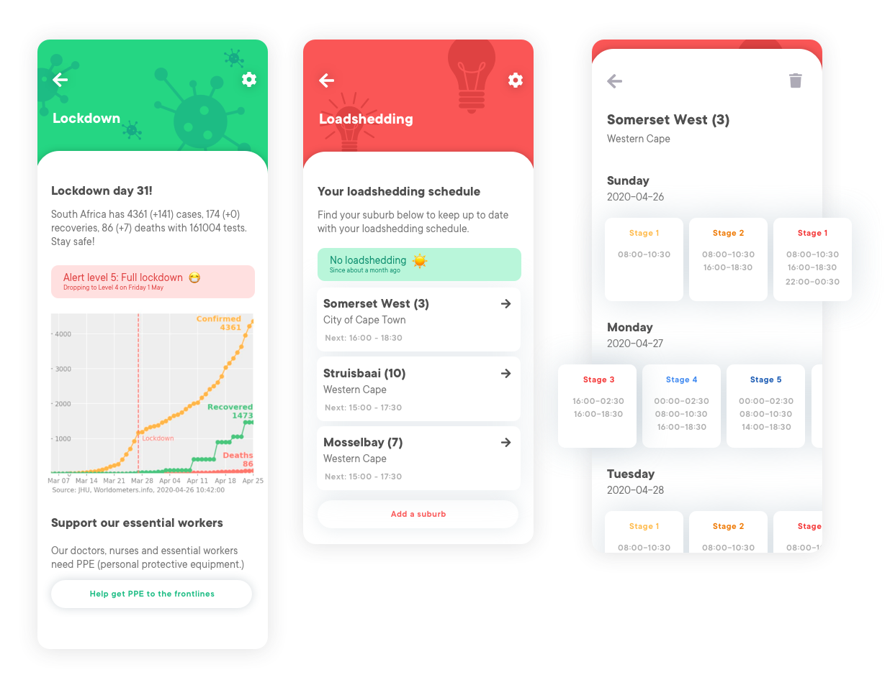
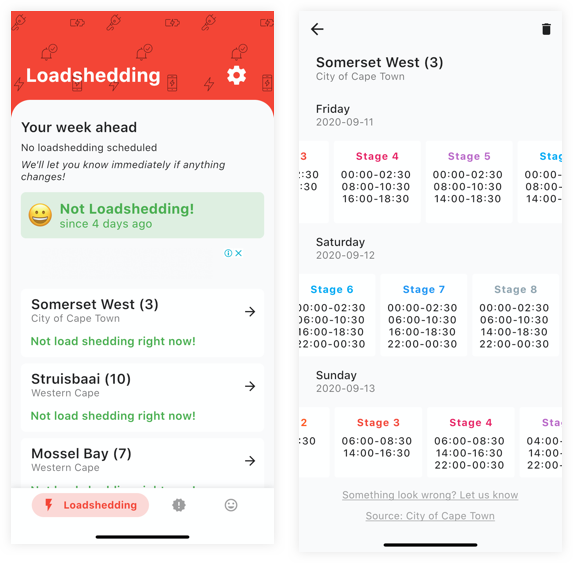

_sePush App
Mobile app redesign
EskomSePush is an app used by South Africans to track when they can expect power cuts. This unsolicited redesign was eventually used and adapted by the developers of the app.
The problem
When Eskom introduced load shedding a few years ago, scheduled power cuts quickly became a natural part of our lives in South Africa. An app, EskomSePush (the name is a play on a rude Afrikaans phrase) was developed to help track when power cuts would happen. It is now an app that many South Africans rely on.
Over time, the developers had to add more features and functionality to the app and it gradually became more cluttered and complicated to use. Instead of only four load shedding stages, there are now eight. And then when the pandemic hit our country, the developers started including COVID-19 statistics. Loadshedding was suspended, but South Africans could track the cases daily on the app.

Thus came the need for a redesign. I isolated the following problems to solve:
- Find a way to display the increasingly complicated loadshedding schedules is easy to navigate
- Find a better typographic hierarchy and use of colour for the app
- Ensure that the app design is scalable and flexible enough to include any new crisis that might come our way
Proposed solution
I initially proposed a menu screen that could be expanded to display numerous crises, such as water restrictions during a drought or information about wild fires. A settings page would allow users to turn notifications on or off.
Each section would have a header that is colour coded according to the button on the home screen. The colour scheme is based on our flag, and the feeling of the app is bright and cheerful. I also suggested dropping the word “Eskom” and replacing it with an underscore, as if to suggest that one can insert whatever issue you like into the phrase.
To solve the problem of the increasingly complicated load shedding schedules, I proposed horizontally scrolling tiles to navigate through the different phases.


Final implemented design
The developers implemented the colourful headers and split the COVID-19 stats from the load shedding. The side scrolling tiles for the schedule was also implemented, which is my personal favourite change to the app. It has already made my own life a little easier.
